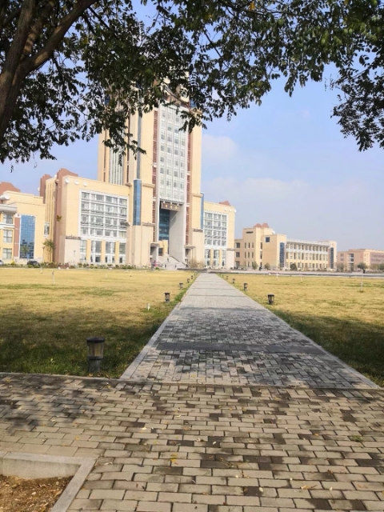

 4月2日上午，我校在办公楼1515会议室召开了20系部主会议由岳澎副校长主持，参加会议主要人员务处有关人员。4月2日上午，我校在办公楼1515会议室召开了2020届毕业生开学教学工作安排会。会议由岳澎副校长主持，参加会议主要人员有各院系部主任、教学副主任、各实验中心主任以及教务处有关人员。4月2日上午，我校在办公楼1515会议室召开了2020届毕业生开学教学工作安排会。会议由岳澎副校长主持，参加会议主要人员有各院系部主任、教学副主任、各实验中心主任以及教务处有关人员。4月2日上午，我校在办公楼1515会议室召开了2020届毕业生开学教学工作安排会。会议由岳澎副校长主持，参加会议主要人员有各院系部主任、教学副主任、各实验中心主任以及教务处有关人员。4月2日上午，我校在办公楼1515会议室召开了2020届毕业生开学教学工作安排会。会议由岳澎副校长主持，参加会议主要人员有各院系部主任、教学副主任、各实验中心主任以及教务处有关人员。4月2日上午，我校在办公楼1515会议室召开了2020届毕业生开学教学工作安排会。会议由岳澎副校长主持，参加会议主要人员有各院系部主任、教学副主任、各实验中心主任以及教务处有关人员。
会议首先由刘宽亮网络教学检查与督导情况进行了说明，要求各院系要及时发现网络教学中的问题与不足，同时要积极开展优秀网络教学案例的分享交流活动。接着，他就2020届毕业生返校后的教学工作做了详细安排，第一批学生返校时间为4月15日到16日，涉及所有院系共计30个专业。要求各院系就以下几个方面做好详细的教学工作方案，主要包括：（一）制定毕业论文线上线下指导工作方案；（二）制定详细的实验课表，提前做好实验室消毒、进出实名登记、楼门口放置注意事项等工作；（三）毕业论文写作教室安排；（四）制定论文答辩工作方案；（五）毕业生重修、考试、体质测试工作；（六）教材退款、毕业生信息采集、信息核实、学士学位授予工作；（七）2020年本科院校青年教师教学竞赛工作等。 会议首先由刘宽亮处长对本学期以来的网络教学检查与间为4月15日到16日，涉及所有院系共计30个专业。要求各院系就以下几个方面做好详细的教学工作方案，主要包括：（一）制定毕业论文线上线下指导工作方案；（二）制定详细的实验课表，提前做好实验室消毒、进出实名登记、楼门口放置注意事项等工作；（三）毕业论文写作教室安排；（四）制定论文答辩工作方案；（五）毕业生重修、考试、体质测试工作；（六）教材退款、毕业生信息采集、信息核实、学士学位授予工作；（七）2020年本科院校青年教师教学竞赛工作等。
岳澎副校长要求各院系要从思想上高度重视，从现在起进入战备状态，扎实细致做好开学前准备工作，从学生角度出发，制定详细的工作方案，安排好学生的学习生活，确保学生返校后教学平稳有序。同时，要求各院系要做好毕业生就业指导、2020年招生宣传等工作。最后，她又对教学质量工程项目的推进建设和师范专业认证工作做了安排。 岳澎副校长要求各院系要从思想上高度重视，从现在起进入战备状态，扎实细致做好开学前准备工作，从学生角度出发，制定详细的工作方案，安排好学生的学习生活，确保学生返校后教学平稳有序。同时，要求各院系要做好毕业生就业指导、2020年招生宣传等工作。最后，她又对教学质量工程项目的推进建设和师范专业认证工作做了安排。 岳澎副校长要求各院系要从思想从现在起学生的学习生活，确保学生返校后教学平稳有序。同时，要求各院系要做好毕业生就业指导、2020年招生宣传等工作。最后，她又对教学质量工程项目的推进建设和师范专业认证工作做了安排。